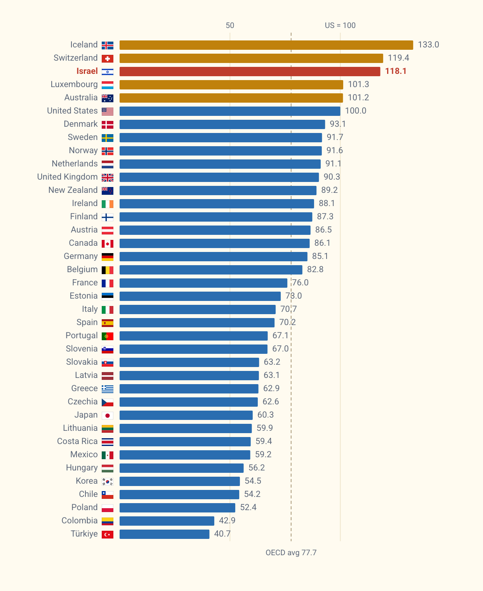

-

Economics
Israel is a rich country that is too expensive to live in
Our prices run about 62% higher than our output per person predicts, which makes Israel the biggest outlier in the OECD.
-
Data
Not Indiscriminate: What Hamas's Own Numbers Show
Nine published lists, 60,199 names. Children are 40% of Gaza and 25% of the dead; military-age men are 28% of Gaza and 50% of the dead.
Who's writing
I'm David Zeff. I work as a budget analyst (תחשיבן) in the social services department of the Gush Etzion Regional Council. Most of my week goes on public budgets: building them, checking them against what actually got spent, and every so often arguing about them.
I studied computer science at Sapir College. I write here about economics, public policy, and what turns up when you go and check the numbers yourself. Every chart on this site comes from a dataset you can read in the repository.